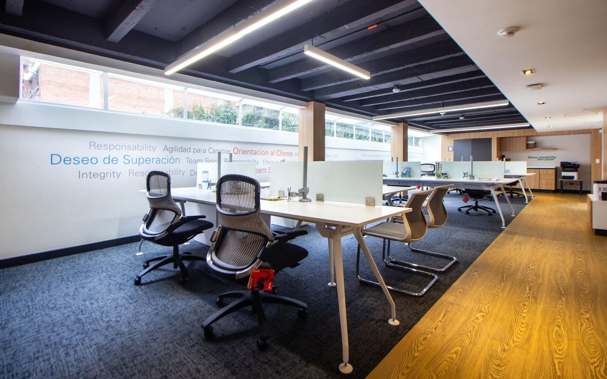
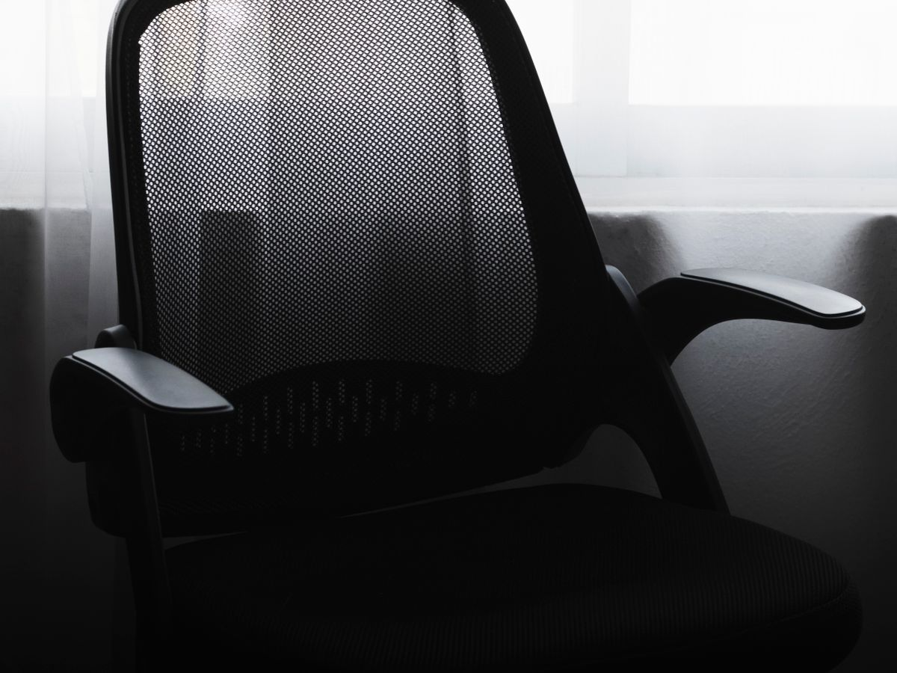
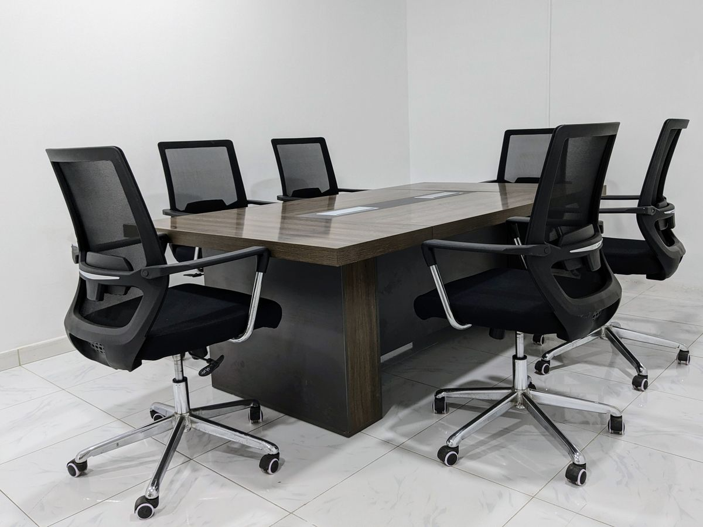
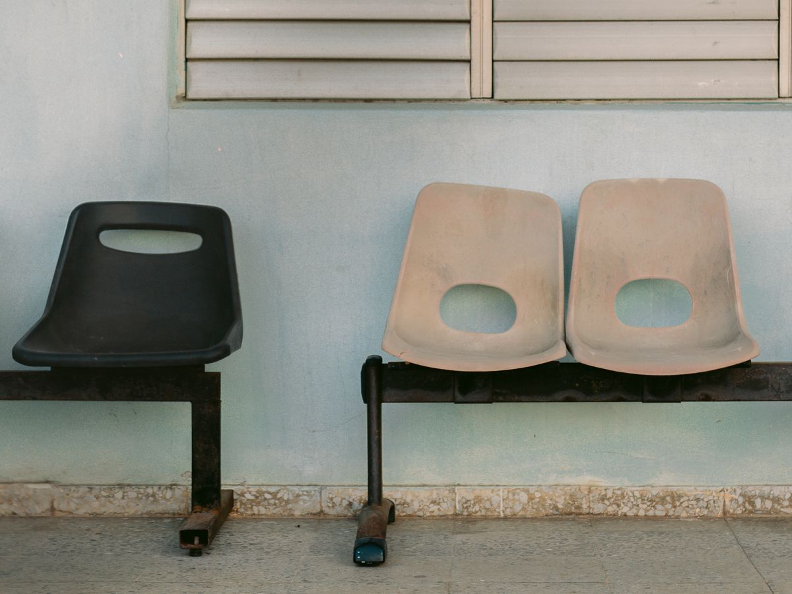
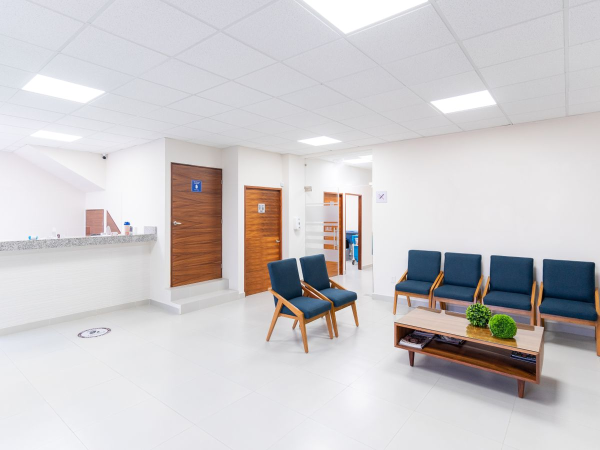

Completed work & clients
Before & after: see the results for yourself
Every job we do is photographed before and after. Here are some of our recent projects for offices, colleges and hospitals.

Projects
Drag the slider on each photo






25,000+Chairs serviced
350+Clients
1,200+Jobs completed
4.8 / 5Average client rating
Our clients
Companies that trust us with their chairs


They refurbished 240 chairs across two floors without disturbing a single working day.Facility ManagerIT Services Company
The repair quote was less than a third of buying new, and the chairs look new.Admin HeadEngineering College
Every chair came back clean, fixed and photographed. We now call them first for anything chair-related.Operations LeadMulti-specialty Hospital